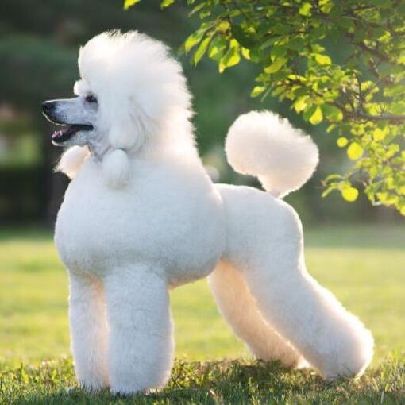

Verschillende varianten
De poedel bestaat in verschillende varianten die uitsluitend op grootte verschillen van elkaar:
De grote 'standaard' poedel – de oudste van de bekende soorten, van origine voornamelijk gebruikt bij de jacht om geschoten wild uit het water op te halen
De dwergpoedel – een kleinere variant van de 'standaard' poedel zoals we deze nu erkennen, hoewel deze variant qua formaat het meest lijkt op de traditionele poedel
De kleine poedel (ook wel toy-poedel) – de kleinste van het stel
Herkomst
De poedel is een eeuwenoud hondenras dat al tijden erg populair is. De herkomst van dit hondenras kan gevonden worden in Europa, waar in landen als Engeland, Duitsland en Frankrijk al in de verre geschiedenis tekenen van dit ras zijn. Aangenomen wordt dat het ras hier ingezet werd als jaaghond, getuige de bekende manier van scheren. De vrij volle vacht kon erg zwaar worden door water, waardoor grote delen van de vacht afgeschoren werden. Ook werd de staart ingekort om zo ervoor te zorgen dat deze geen hinder tijdens de jacht verzorgde. Hierdoor ontstond het bekende poedel-postuur.

Kenmerken
Poedels zijn bij de meeste mensen bekend om de opgeschoren vachtpatronen waarbij het achterdeel van de hond kaal geschoren wordt. De poten en het topje van de staart blijven wel lang, waardoor een bijzondere vorm ontstaat. Deze manier van trimmen wordt ook wel de 'leeuwentrim' genoemd. Maar lang niet alle poedels worden op deze manier geschoren.
Gemiddeld worden poedels een jaar of 15, al zijn uitschieters natuurlijk altijd mogelijk. De afmetingen hangen af van de variant, maar de grootste poedels worden zo'n 45 tot 60 centimeter groot en hebben een gewicht van zo'n 20 kilo. De kleinste variant wordt gemiddeld niet zwaarder dan een kilo of 7 en maximaal 28 centimeter groot.
Karakter
Poedels zijn intelligente honden. Daarnaast zijn ze vrolijk en levendig en zullen ze altijd vriendelijk zijn naar hun baasjes. Ze zijn goed inzetbaar als waakhond.
Wil je een poedel bij een andere hond of een ander huisdier zetten? Ook dat is geen probleem, poedels zijn uiterst sociaal richting andere dieren en kunnen dus prima met een andere hond of kat overweg.
Verzorging
De vacht van een poedel vraagt enige verzorging en dient met regelmaat geborsteld te worden. De dubbele vacht bestaat namelijk uit meerdere lagen. Wanneer deze verhaart, blijven de losgekomen haren in de ondervacht steken waar deze kunnen gaan samenklitten. Goede verzorging van de vacht is daarom bij dit ras van groot belang. Voordeel is wel dat je weinig haren in je huis zult terugvinden.
Qua voeding heeft het dier geen specifieke vereisten, al is een kwalitatieve hondenvoeding altijd raadzaam.
Mede vanwege de jachtachtergrond van het dier en de energie die het beest heeft is het noodzakelijk de hond voldoende te laten bewegen. Zorg voor voldoende wandelingen en breng hierin routine aan. Dit is essentieel om een gehoorzame, zindelijke hond te hebben. Zorg goed voor je vriendje, ga regelmatig op een wandeling en geef hem de nodige liefde. Je zult zien dat hij hetzelfde doet en dat je een gezellig vriendje hebt waar je veel plezier mee zult beleven!